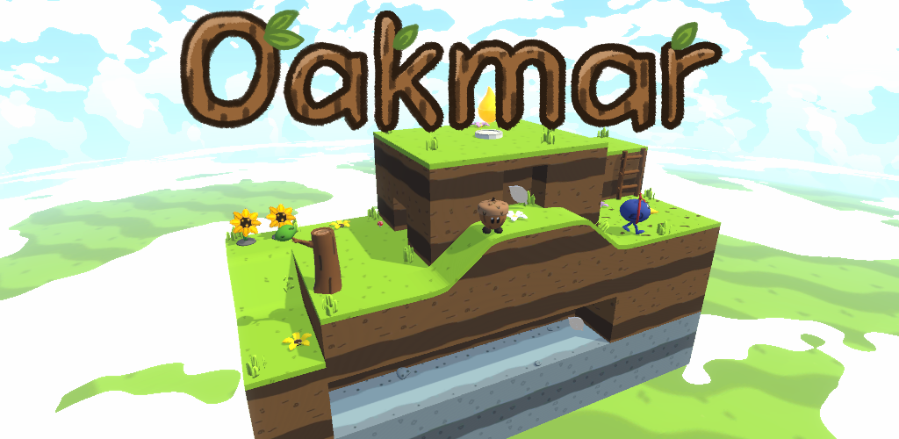
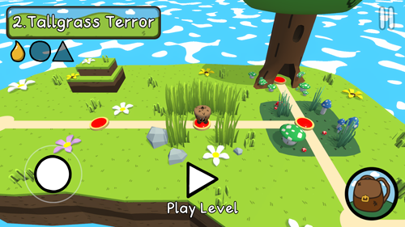
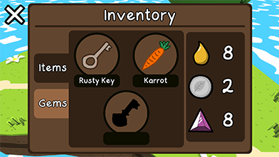

Oakmar

Production Details:
- Game Engine: Unity
- Team Size: 1 developer
- Timeline: 12 Months - Released August 28th, 2022
- Platform: Apple App Store & Google Play Store
Tools:
- Compiler: Microsoft Visual Studio 2022
- Version Control: Tortoise Git
- Modeling/Texturing: Blender & Photoshop
About:
Oakmar is a 3D mobile adventure game made with Unity. You must control Oakmar, a small acorn, to complete puzzles and avoid obstacles to reach a glowing treesap, which completes the level. Each level has a couple collecatbles the player can obtain to unlock other areas of the game. After each level, the player is taken to a 3D level select where they can move around to choose a level to play (similar to Super Mario World). There are 15 levels, 10+ minigames, and a final boss.Trailer:
Features:
Puzzle Plants
Within each level, there are "Puzzle Plants" which can be interacted with to start a minigame. These minigames range from mini-golf to matching shapes. Each puzzle plant uses abstraction for its class because the player begins and ends the interaction the same.Highlights:
- Wide variety of minigames (minigolf, match the shapes, painting, etc.)
- Abstraction in classes to reduce unnecessary implementation
World Space Triplanar Shaders
Nearly all the terrain in the game uses a world space triplanar shader to render its material. This shader uses the XYZ axis and object's world space position, instead of UV's, to texture the object. This gives a consistent texuture size to all the terrain, regardless of how big or small its UVs are. In addition, the shader seamelessly connects textures across different meshes because it uses the world space position for its UV's.
Level Select

Oakmar features a 3D level select where the player moves across nodes that represent the levels.
When standing on a level node, details for the level, like the name and collectables, are revealed.
After completing a level, a path to a new level is revealed and some decor appears around the
completed level node. Certain areas of the map are locked and can be unlocked using key items from a shop.
Inventory System

While in the level select, the player can access their inventory which displays their gems and key items.
A JSON file is used to keep track of which items the players have as well as level specific data.
The main currency of the game, silver coins, can also be displayed in the inventory. While in the game's
shop, the three key items can be purchased. The gems however, must be obtained in specific levels. The key items
and gems unlock areas of the game such as the final boss.